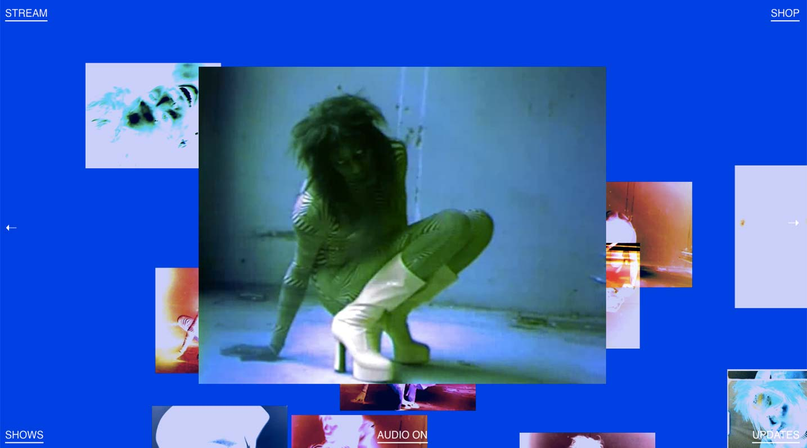

Yves Tumor
Go to Site
DESIGN
This website is extremely experimental and trippy. On the index page, there is a video clip that plays in the middle, layered on top of other spooky imagery that move as you move your cursor. The colours are very menacing and there is a lot of glitching. It’s designed for Yves Tumor, an American producer of experimental electronic music. His latest album, “Safe in the Hands of Love” invokes feelings of disorientation, and that is the exact sensation reflected in navigating this website.
USABILITY
The website echoes the carnivorous sounds of the album, so it’s not pretty or nice to use. It purposely incorporates glitch errors into the design as you hover your cursor around the screen. External links to stream, shop, updates, and shows are found on the four corners of the index page.
CREATIVITY
This is a website we don’t see often, it breaks away from music album website archetypes we usually encounter. It’s very pungent and pervasive and I really like it.
CONTENT
There’s barely any text on this website, it’s just imagery and video clips from Yves Tumor’s latest album. His music is a benchmark in experimental electronic music, referencing ripping, cracking, screaming, breaking, gouging, pain and torture. But there’s also a raw honesty and connection with love. The images, audio and overall interaction to the website brings a sense of searing, borderless anti-confinement.